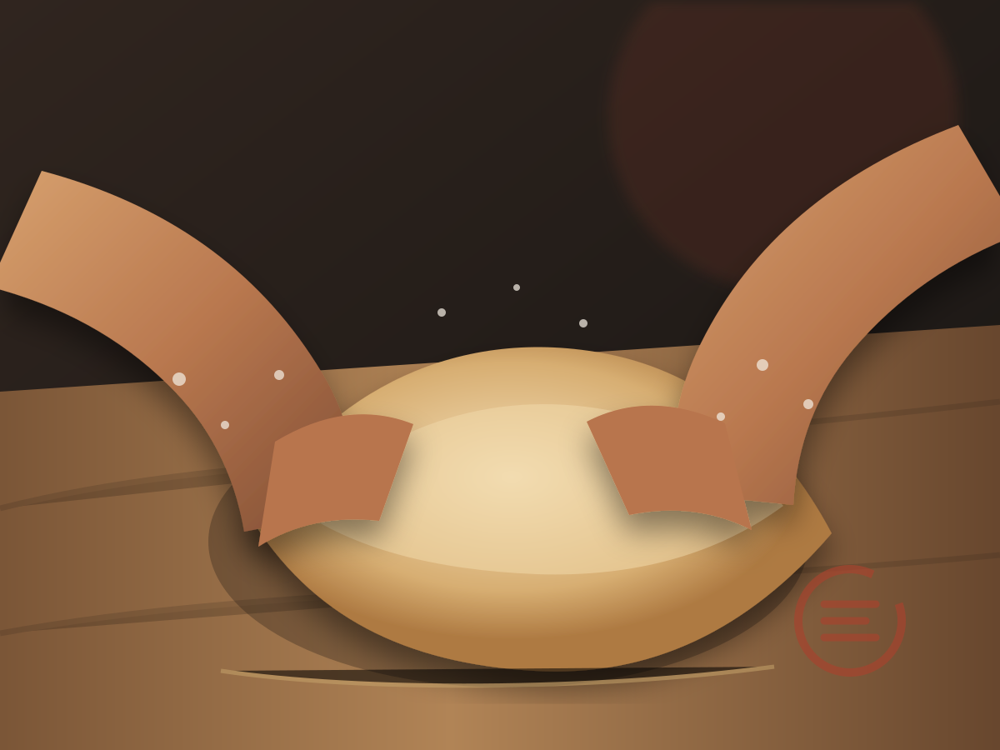

Desarrollamos la masa que no encontrábamos.
Pizza neo-napolitana desarrollada en Colombia, productos para preparar en casa y una pizzería capaz de ponerse en movimiento.
Una marca, cuatro entradas
¿Cuánto quieres cocinar tú?
Elige dónde quieres entrar al proceso: desde construir la masa hasta llevar una pizza completa al horno.
Aire y Tiempo
Hazla desde harina, agua, tiempo y fuego.
Crea la Tuya
Nosotros hacemos la parte difícil. Tú decides cómo termina.
En Casa
Pizzas completas diseñadas para volver al fuego.
Despensa
Tomate, reducciones y el último gesto.
Nuestra masa
La fuerza que sostiene el tiempo.
Un blend para trabajar fermentaciones prolongadas, hidrataciones mayores y apertura manual con un equilibrio más predecible.

Los datos orientan. Las manos confirman.Tienda demostrativa
Productos nacidos de la búsqueda.

Pizza insignia
La Errante.
Chorizo artesanal, cebolla caramelizada, mozzarella, queso madurado y reducción de panela con maracuyá.
Técnica aprendida. Ingredientes propios. Un camino nuevo.
Conocer la pizzaEl Errante en Movimiento
No llevamos pizzas. Llevamos una pizzería.
Masa propia, hornos encendidos y preparación en vivo para bodas, empresas, celebraciones y talleres.

Aprender y probar
El proceso también es producto.
Bitácora, recetas y herramientas conectadas con la tienda y los lotes.